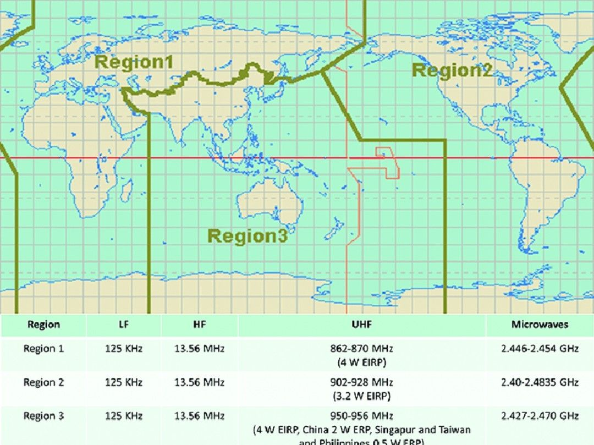

ITU Wireless Region Map [Original Post, ~February 2024]
Check out this racist image I found: 
These are ITU wireless regulation regions. Sure is funny how that boundary between region 1 and 3 is a funny shape, just the right shape to cleanly divide the world's Muslim region.
And I cannot help but notice that on my Teksavvy television service, Al Jazeera has their volume turned down lower than the other news services. Why is that I wonder?
The people doing this kind of stuff are the holy war people. Those are the ones in charge of the US right now.
I really do not understand the bully mentality. Some people seem to be aroused by teaming up, finding people who cannot fight back, and then hurting those people.
Oh yeah I have another example of anti-Muslim racism. I put a Palestinian flag on the door of my apartment and wrote some messages describing how people were being killed and left those on the floor in the hallway. The building management immediately called the police without interacting with me at all, and wrote an official letter describing how I was being threatening, so that they could use the letter as evidence in order to evict me later.
I am feeling an incredible amount of empathy towards the Palestinians right now, with them having their houses exploded, entire families killed, etc. I can clearly see that the US government is racist against Muslims. Trump literally proposed a Muslim ban in the US. And probably democracy does not really exist there, for a number of reasons.
Like how is this problem actually solved? If the leadership in the west is a bunch of dictators that are over in the middle east killing people for no reason, what should those of us here do? I put the Palestinian flag on the door, got in trouble etc. But like, what will actually work?
This is one reason I think we should bring lots of Palestinians to Toronto and Ontario. If there are a lot of Palestinians living here it will be a lot more difficult for the government to get away with being racist against them, at least in Canada. And we are not far from the Muslim region of the US which seems to be Michigan.
I suppose they could move directly to the US to influence politics there, that's another option. But I live in Toronto and I like them so I want them to move here. They would be a more significant voting block in Canada since they would represent a greater share of the population, if they moved here.
By the way, I only partially blame Israel for what is happening. The government in Israel is putting their own people in danger on behalf of the US government. People can get very influenced by what is profitable for them and the US is sending them billions of dollars that they are required to spend on the military. That is quite an incentive. I wonder what would happen if the US instead sent them billions of dollars for a space program?
Seems like an odd flex. My first impression was that Russia lobbied to be grouped with Europe instead of Asia. But it seems more likely this just grew out of how RF bandwidth usage was evolving regionally, then some order imposed to reduce the chaos.
Humans are pattern-seeking critters. Patterns are not always what they seem.